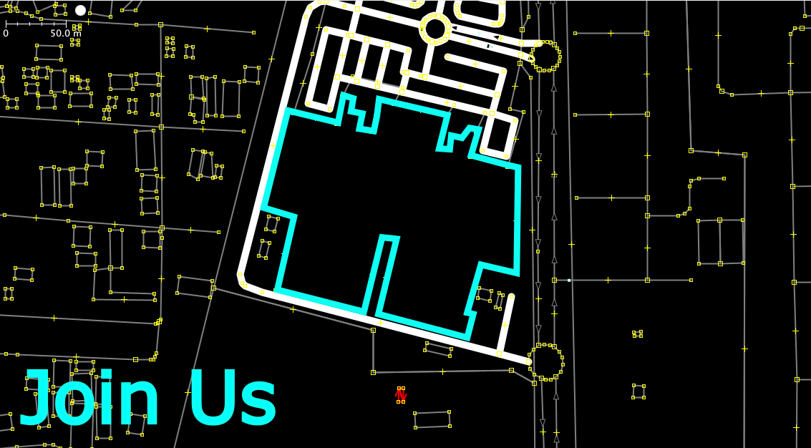
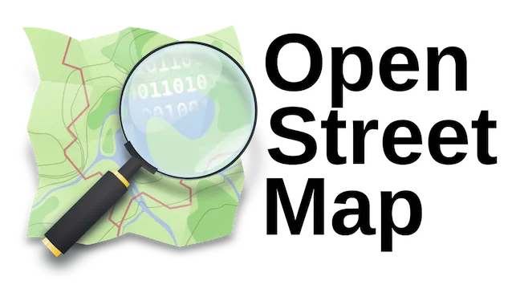
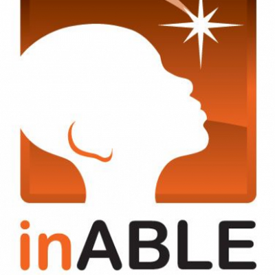

Your Spatial Intelligence Infrastructure
For Malls And Supermarkets
We take your existing floor plans and turn them into a working digital twin. Then we add navigation, real-time inventory visibility, and shopper movement data. Shoppers reach what they need faster. Stores close more sales. And you finally see exactly what is happening between the entrance and the till. We've already done this at Novare Lekki Mall — a full 22,000 m² pilot that is live today.
We started with malls and supermarkets.
The problem exists in every large indoor space.
Retail makes it obvious. People walk in, search, get frustrated, and leave without finding what they came for. The same thing happens in hospitals, airports, universities, and warehouses. People get lost, time is wasted, and systems have no visibility. Waide fixes this by helping people find what they need and giving operators a clear view of what is actually happening inside their space.
Most shoppers come in looking for something specific.
Too many leave without it — and you never see it in your numbers.

- In large supermarkets and malls, 15–20% of shoppers walk out without buying simply because they couldn’t find what they came for. This loss is invisible. It doesn’t show up in sales reports, complaints, or dashboards — yet it happens every day.
- This is not a pricing or demand issue. It is a navigation problem. Shoppers decide to buy, but lose time searching. With Waide, they check availability before visiting, walk in, scan once, and go directly to the exact shelf.
- Every search and movement becomes data: what shoppers are looking for, where they go, and where they drop off. This is insight your teams have never had — and cannot get from traditional systems.
See Waide Maps in action
Where we are today

Partner With Waide
Waide is in active deployment at Novare Lekki Mall and is building the spatial intelligence infrastructure that will define how African retail assets, healthcare facilities, and transport hubs operate in the next decade. We are looking for the right partners to grow with.
How It Works
From floor plan to live intelligence — in three steps that require no hardware, no app build, and no long integration cycle
We Map the Space
We convert your floor plans and site data into a digital twin of the mall, supermarket, or other large venue — covering every floor, store footprint, shelf layout, and parking area. At Novare Lekki Mall, that meant 22,000m², 900 shelves, and 1,000 parking bays mapped as a working digital twin.
We Connect Shoppers to Products
Shoppers scan a QR code at the entrance — no app download — and can immediately search for any product, store, or department. They get step-by-step directions to the exact aisle and shelf. They can also check availability before they leave home, order for click-and-collect, and receive relevant offers while they are in the store.
We Show Operators What Is Happening
Operators get a clearer view of shopper movement, product demand, and engagement across the property. Weekly reports show what people searched for, where they went, and where they stopped before buying. At 180 days, a full evaluation report covers everything the property has learned about its shoppers. That intelligence is accessed through Waide as a live data layer — giving you a view into your venue that has never existed before.
We Surface the Purchasing Power Signal
When shoppers navigate to a shelf and leave without buying, there is always a reason. Waide captures that gap at scale — which products are consistently wanted but not purchased, at what price point the pattern shifts, and how that behaviour changes across the month as household budgets tighten. That is not a gap in your data. It is your most useful commercial signal.

No app download required
Shoppers scan a QR code at the entrance and start immediately. No installation, no account, no friction. Every smartphone that walks through your doors can use it from the first day you go live.

You access the intelligence through Waide
Every search, every aisle visited, every product checked and not bought — that tells you something about your shoppers. Through Waide as an intelligence layer, you gain a view into how your shoppers move, what they want, and where you are losing them. The platforms delivering to your catchment have been building exactly this kind of picture on your customers for years. Waide builds it for you.

Built for African retail realities
Works on every smartphone without installation. Offline-capable where connectivity is limited. Navigates in local African languages. Designed for how retail actually operates across the continent — shaped by direct market research and shopper feedback from African retail environments.
Retail malls and supermarkets are where we start. Every large indoor venue has the same problem.
Shoppers get lost. Stores lose sales they should have made. Operators manage properties without knowing what is actually happening between the entrance and the till. Waide solves that in malls and supermarkets first — then in hospitals, airports, universities, and warehouses, where the same invisible friction costs the same kind of money.
Retail Malls and Supermarkets — the Primary Deployment
Waide's active deployment is at Novare Lekki Mall — 22,000m², 900 Shoprite shelves mapped at shelf level, 150+ store footprints, 1,000 parking bays. The platform delivers zone performance data, anchor spillover measurement, corridor heat maps, shelf-level navigation, real-time inventory sync, geofenced promotions, and click-and-collect fulfilment. For Centre Managers and retail CEOs, this is the intelligence layer that turns a physical asset into a data-driven, fund-reportable property.
- Zone traffic rankings and corridor heat maps updated daily
- Anchor tenant spillover measurement — verified, not assumed
- Shelf-level navigation that transfers shopper loyalty from day one
- First-party behavioural data owned entirely by the operator

Accessibility built in, not added on
Waide routes shoppers with mobility and visual impairments through the venue on paths that work for them — no dead ends, no inaccessible entrances, no guesswork. It is part of the platform for every deployment, not a separate feature.

The Novare Lekki Deployment
22,000m² digital twin built at Waide's own cost. 900 shelves mapped at shelf level. Active pilot with Novare management. The proof that the infrastructure is real.

Healthcare and Campus Intelligence
Patient wayfinding in large teaching hospital complexes. Campus orientation for new students. Accessible routing for every user. The same platform adapted to the specific needs of each environment.

Enterprise-Grade. Africa-Built.
Designed for the operating realities of African retail and infrastructure environments. Zero app download. Works on every smartphone. Offline-capable in low-connectivity settings. Navigates in local African languages.
Industries We Deploy In
Waide's spatial intelligence infrastructure adapts to every indoor environment where people move, operators make decisions, and data currently does not exist.
Retail Malls
Zone performance data, tenant traffic proof, corridor heat maps, and fund-grade asset reporting

Airports
Passenger flow intelligence, terminal retail activation, concession zone performance, and accessibility routing

Hospitals
Patient wayfinding, accessible routing, and zone utilisation data for large healthcare campuses

Corporate Real Estate
Hybrid workplace navigation, visitor management, and space utilisation intelligence for large office campuses

Universities
Campus navigation for students and visitors

Hotels
Guest services and facility navigation

Convention Centers
Event navigation and crowd management

Sports Venues
Stadium navigation and seat finding

Museums
Interactive exhibit navigation and tours

Train Stations
Platform guidance and transit connections

Libraries
Resource location and study space finding

Warehouses
Inventory navigation and logistics optimization

Manufacturing
Factory floor navigation and safety routing

Data Centers
Server location and maintenance routing

Parking Garages
Vehicle location and space availability

Cruise Ships
Deck navigation and amenity location

Theme Parks
Attraction navigation and queue management

Casinos
Gaming floor navigation and amenity finding

Subway Systems
Underground navigation and transfer guidance
What Waide's Infrastructure Delivers for Your Property
- Zone performance data that transforms lease negotiations. When a tenant disputes their traffic or pushes back on their rent, the response is no longer an opinion about location. It is a corridor heat map, a navigation demand report, and six months of verified shopper movement data. Leasing teams using Waide report faster negotiations and fewer rent concessions on high-traffic zones.
- The loss is large and it is invisible. Roughly two in every ten shoppers leave a large mall or supermarket without buying because they could not find what they came for. For a large venue, that typically means $5 million to $7 million in sales disappearing every year without showing up anywhere in the reporting. Shelf-level navigation and real-time inventory visibility begin recovering that from the first week a shopper searches for a product and gets guided directly to the shelf.
- The anchor tenant spillover model has never been verified. Every mall's financial model assumes that anchor tenants generate traffic that distributes to smaller stores. That assumption has never been measured. Waide produces the first verified proof — which zones receive spillover, at what volume, and for which tenants. The result is a lease pricing framework that is defensible, not assumed.
- A vacant unit pitch becomes a verifiable prospectus. Without data, the claim "this zone gets strong footfall" is a statement. With 180 days of Waide navigation data, it is a verified corridor traffic report showing how many shoppers passed through that exact zone, at what frequency, and at which hours. Leasing deals close faster with evidence than with assertion.
- Pre-visit inventory checks capture demand e-commerce would have taken. Every shopper who checks product availability through Waide before leaving home and confirms it is in stock makes a physical trip that Jumia or any delivery platform would have captured instead. After 180 days, you will know exactly how many physical visits Waide generated that e-commerce would have won.
- Aisle demand analytics tell you where you are losing money quietly. Which shelves have high navigation traffic but low conversion? That is a ranging problem, a pricing problem, or a placement problem — measurable for the first time. Category managers using Waide's aisle demand reports identify and correct these gaps in the first month of deployment.
- Fund-grade 180-day reporting changes the board conversation. The weekly KPI report and 180-day Evaluation Report are formatted for institutional investors and fund boards — not just operations teams. Zone performance rankings, anchor spillover data, shopper engagement metrics, and fulfilment conversion rates in a single document that makes the asset's performance measurable, communicable, and defensible.
- Accessible routing opens a shopper segment no competitor serves. Over 25 million Nigerians live with a disability that affects their mobility. Not one major mall or supermarket in Nigeria currently offers certified accessible indoor navigation. The first venue that deploys Waide's accessible routing layer is the first to serve this segment — with a CSR story, a government partnership opportunity, and a brand differentiator that costs nothing to activate because it is built into the platform.
What This Means for Your Business
Recoverable Revenue From Day One
- Roughly two in every ten shoppers leave without buying because they could not find the product.
- For a large venue, that is typically $5 million to $7 million in lost sales every year.
- Invisible in the reporting, but recoverable from the first month Waide is live.
Fund-Grade Asset Performance Data
- Zone performance rankings and anchor spillover measurement.
- Corridor heat maps and weekly KPI reports.
- Turns the Centre Manager's next board presentation from a story into verifiable evidence.
Lease Negotiations Backed by Data
- When a tenant disputes their traffic, the response is no longer an opinion.
- It is a corridor heat map, a navigation demand report, and six months of verified shopper movement data.
First-Party Shopper Data. Owned by You.
- Before leaving home, shoppers check stock and plan their visit through Waide.
- Every search and aisle visit creates a shopper picture that feeds your marketing directly.
- Campaigns built on real in-venue search data convert at multiples of generic outreach.
Zero App Download Required
- A QR scan activates the full platform for every shopper with a smartphone.
- No download, no registration, no friction. Activation rate 10–20× higher than any app-based alternative.
Accessible Routing — First in Nigerian Retail
- Certified accessible navigation — a CSR story, a government opportunity, and a brand differentiator.
- No competitor in Nigerian retail has built this. Activated at no additional cost.
Click-and-Collect Fulfilment
- Digital orders assembled in-store, collected from designated bays same day.
- Makes every physical store competitive with e-commerce on the metric that drives grocery switching — time saved.
Navigation in Local African Languages
- Every shopper can use the platform in their preferred language. Built for the linguistic diversity of African retail through direct research in the markets we serve.
Know where price is the barrier, not the product
- High navigation traffic at a shelf with low purchase conversion tells you whether the issue is availability, placement, or price point.
- The timing across the month shows when your catchment's purchasing power peaks and when it tightens.
- Turns your next promotion from a broadcast guess into a targeted intervention.
Accessibility is not an add-on. It is how Waide is built.
In malls and supermarkets, the same space that works well for most shoppers can be genuinely difficult to move through for people with mobility, visual, or cognitive impairments. Waide routes every shopper on paths that work for them — including the ones most venues have never thought to serve.
Mobility and wheelchair routing
Accessible paths through every area of the venue — no inaccessible routes, no dead ends, no guesswork about which entrance to use.
Visual impairment support
Voice guidance and audio navigation built into the platform. Shoppers who cannot read a screen can still move through the space with confidence.
Works in local African languages
Navigation and guidance available in local languages — because accessibility means being useful to every shopper, not just those who read English.
Meet the Team


What Our Partners Say
"What made Waide different was how specifically they understood the problem. They were not selling a navigation tool. They understood what it means to manage a retail asset without visibility into what shoppers actually do inside it."
— Property Asset Manager, Lagos"For the first time we have data that tells us which shelves are losing us revenue quietly. The aisle demand reports have changed how our category team makes decisions."
— Retail Operations Director, Nigeria"The weekly KPI reports are the first thing I show at fund review meetings. It is the only data our board has ever seen that quantifies what is actually happening inside the asset."
— Centre Manager, West AfricaTechnology Partners
Waide's spatial intelligence infrastructure is built on open, enterprise-grade technology foundations that ensure every deployment is reliable, scalable, and interoperable across African retail and infrastructure environments.

Open Street Maps
Providing open-source mapping data for global navigation.

inABLE
Advancing accessibility solutions for inclusive mobility.
Why Now
Every significant advantage in retail, healthcare, and property management in the next decade will belong to the operators who own their data. The operators who build that intelligence infrastructure first will define the standard everyone else chases. Here is why that window is open right now — and what you stand to own by walking through it.
The first venue in your city to know its shoppers will be the hardest to displace
- Right now, no mall, supermarket, hospital, or airport in your market has a live spatial intelligence layer.
- The first property that deploys starts building a dataset that grows every week — shopper patterns, zone performance, inventory demand, return visit frequency.
- When a competitor opens nearby, they have zero. You have months of evidence. That gap does not close quickly.
Early deployments get closer. Later deployments get a product.
- Early operators work directly with the founding team and shape how the platform develops for their industry.
- If you want a platform that reflects how your operation actually works — not how a generic template assumes it does — early is the right time.
Your competitors are building their next property. You should be building your data advantage.
- New retail, healthcare, and logistics developments are being planned across every major African city right now.
- The venue that started building that answer 12 months ago wins that conversation without having to fight it.
Accessible venues are not a future requirement. They are a present opportunity.
- Tens of millions across Africa navigate spaces every day with mobility, visual, or age-related limitations that no venue currently accommodates.
- Waide's accessible routing is built into the platform at no additional cost. You activate it the moment you deploy.
Your investors are already asking a question you cannot yet answer
- Not occupancy rate. Not total footfall. Which zones earn their rent, whether the anchor model distributes traffic, how shoppers actually move through the space.
- The Centre Manager who walks in with a zone performance dashboard and six months of shopper data answers a question most operators in the room cannot.
The proof is already built. You are not taking a risk on something new.
- The 22,000m² digital twin of Novare Lekki Mall exists. The pilot is running.
- There is no concept to evaluate — only a decision about whether your property activates the infrastructure or waits while another one does.